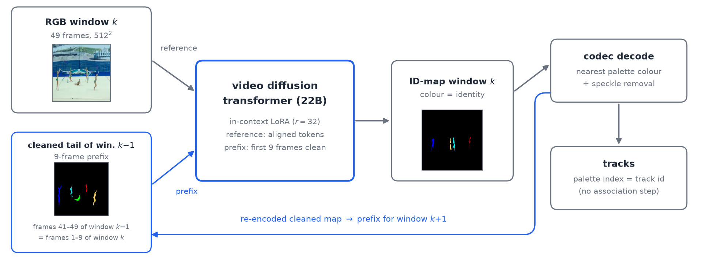
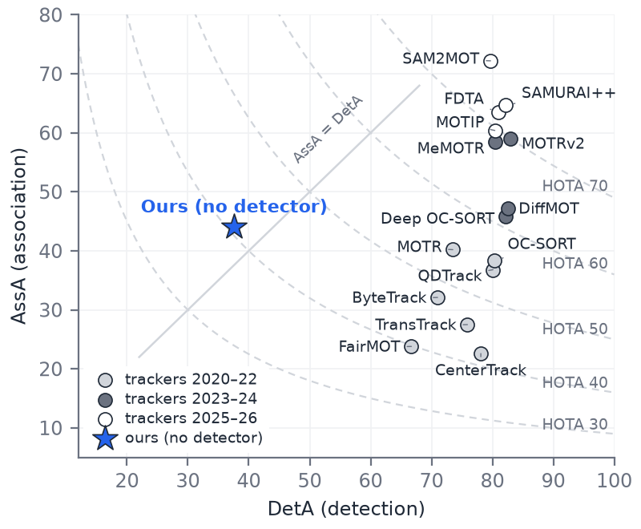
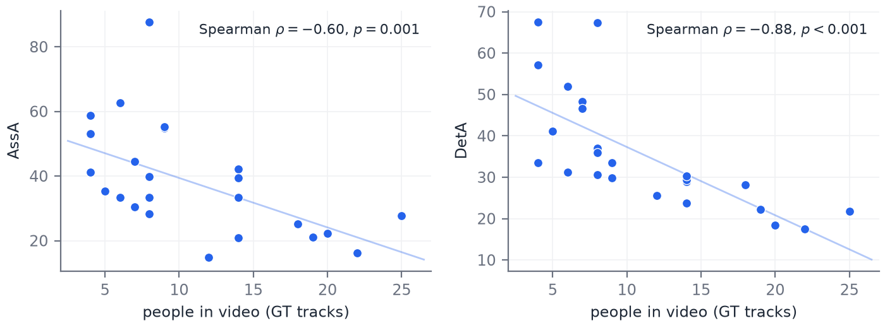

Haiyu Yang, Miel Hostens · arXiv:2607.17120
The Generator Is the Tracker: multi-object tracking by painting persistent identity colours
Trackers keep identity outside the video: track buffers, motion models, appearance embeddings. A video generator already has to know which pixels belong to the same person from one frame to the next, or the people in its videos would not stay themselves. We ask whether that knowledge can be read out directly, by asking the generator to paint each person a colour that stays the same over time.
We fine-tune a 22B text-to-video model (LTX-2.3) to turn an RGB clip into an ID-map clip: every person painted a flat, distinct colour on black, same colour, same person. Long videos are generated as chained windows, and a short continuation fine-tune teaches the model to extend a colouring it is handed. Tracks are read off the generated pixels. There is no separately trained detector, no motion model and no association module.
Code Paper (arXiv) Checkpoints
The idea: identity as colour
Tracking has two parts. Binding: the same region must get the same label from frame to frame. State: a person who is hidden must still be remembered when they come back. Conventional trackers solve both with machinery beside the video. A video diffusion model attends to a whole clip at once, so binding is something it does anyway; the question is whether it can be made to show it, and to carry state from one clip to the next.
The interface is an image: each person painted with one of the 47 identity colours of a 48-colour palette (index 0, black, is background), chosen to maximise pairwise separation in CIELAB (closest pair ΔE 26.4). Decoding needs no model: every pixel snaps to its nearest palette colour, each colour's connected regions give a box, and the palette index is the track id. The codec round-trips masks at IoU ≥ 0.99 with every identity preserved, and ID-maps are only ever stored losslessly, because compression smears flat colours.
The 47 identity colours. Index 0, black, is background. In training each ground-truth identity is given one colour for the whole video; at inference the model chooses colours itself.
How it works

Translate
LTX-2.3 is fine-tuned with its native in-context LoRA: the RGB clip enters as clean reference tokens with positions aligned to the target, so attention learns a positionally locked translation from RGB to ID-map, aligned at the level of latent tokens (32×32-pixel patches). Rank 32, 0.74 % of the parameters, on 777 clips from the 40 DanceTrack training videos with silhouettes from SAM 3. The whole fine-tune fits on one 80 GB A100.
Chain
A video is split into 49-frame windows at stride 40. Each window's first 9 frames are fixed to the previous window's tail after decode, correct, re-encode: snapped to palette colours, speckles removed, encoded again. The condition is always a valid ID-map, never raw generation, and it is the only state the system has.
Continue
Chaining at inference alone fails: the model was trained to invent colourings, not to continue one, so past the overlap it repaints. A short continuation fine-tune hands it the target's own first 9 frames half of the time. On the development video full-video IDF1 rises from 0.17 to 0.47.
Where the identity comes from
Identity could in principle come from linking windows after the fact. To separate the two ingredients we ran a 2×2 factorial on all 25 full-length validation videos with identical window geometry (640 windows per cell): the checkpoint before or after continuation training, run as independent windows (linked afterwards) or as a chain.
Neither ingredient helps on its own; together they double HOTA. Chaining is worth +18.9 HOTA [15.2, 22.9] for the continuation-trained checkpoint (24 of 25 videos) and nothing for the translation-only one. Re-linking the chain's own windows afterwards changes nothing (34.7), so the colours already carry everything overlap linking can recover.
On identical boxes the trained chain's colours beat classical association. We drop the colour ids from the chain's own boxes and re-associate them with a Kalman/IoU tracker and with a DINOv3 appearance-and-motion bank. Detection is then the same, and association falls from 38.3 AssA to 21.6 and 24.3, with 3,079 and 2,408 identity switches against 1,950. Fast dance motion breaks frame-to-frame geometry and identical costumes defeat appearance; the generated colour stays put. Without continuation training (cell C) the colours are no better than Kalman/IoU on the same boxes.
| Cell | Checkpoint | Generation | HOTA | DetA | AssA | IDF1 | AssA, same boxes: Kalman/IoU | DINOv3 bank |
|---|---|---|---|---|---|---|---|---|
| A (ours) | continuation-trained | chain | 34.8 | 32.3 | 38.3 | 38.3 | 21.6 | 24.3 |
| C | translation-only | chain | 16.8 | 28.7 | 10.1 | 15.5 | 10.4 | 12.6 |
| D | continuation-trained | independent | 15.9 | 17.4 | 15.1 | 15.7 | 10.7 | 11.2 |
| B | translation-only | independent | 18.2 | 19.7 | 17.7 | 17.3 | 12.7 | 14.3 |
DanceTrack validation, TrackEval, sampling seed 0. Validation was also the development set. Independent windows are linked by a pinned overlap-IoU associator, selected on the 5-person development video; part of their deficit is detection, because that associator merges crowded, identically dressed dancers. Read by raw colour instead, independent windows keep their detections, and at the same continuation-trained checkpoint the chain still leads by +19.8 HOTA in all 25 videos. In two further seeds the chain scores 37.1 and 37.8 HOTA, and its lead on identical boxes holds in every seed.
On the test server
One frozen submission to the official DanceTrack server, with no test-side iteration, scores 40.3 HOTA. That is not state of the art: 2025–26 specialists reach 66–76. What no other entry shows is the profile. To our knowledge it is the only submission that runs neither a box detector nor an association or propagation module, and the only one whose association exceeds its detection.

| Method | Year | Detector | HOTA | DetA | AssA | IDF1 |
|---|---|---|---|---|---|---|
| ByteTrack | 2022 | separate | 47.7 | 71.0 | 32.1 | 53.9 |
| MOTR | 2022 | end-to-end | 54.2 | 73.5 | 40.2 | 51.5 |
| OC-SORT | 2023 | separate | 55.1 | 80.3 | 38.3 | 54.6 |
| Deep OC-SORT | 2023 | separate | 61.3 | 82.2 | 45.8 | 61.5 |
| MOTRv2+ | 2023 | separate + end-to-end | 69.9 | 83.0 | 59.0 | 71.7 |
| SAM2MOT | 2026 | separate + SAM 2 | 75.8 | 79.7 | 72.2 | 83.9 |
| Ours (generation only) | 2026 | none | 40.3 | 37.6 | 44.1 | 45.2 |
A selection of the paper's Table 1, which lists 21 trackers with their sources. +Uses CrowdHuman for its proposal detector. AssA is computed over matched detections only, so a tracker that finds the easy people and keeps them whole scores high AssA at low DetA. Our recall is low and lowest in crowds; the like-for-like comparison of association is the one on identical boxes above.
Keeping a hidden person's colour
The hardest identity problem is a person who disappears, behind someone else or out of frame, and comes back. We mined every ground-truth gap of at least 9 frames in the 25 validation videos: 383 events, 360 occlusions and 23 exits. Of the 205 events the chain tracked on both sides of the gap, it gave 86 (42 %) back their own colour, 22 % of all 383 events. A Kalman/IoU tracker and the appearance bank, run on the same boxes and events, managed 47 and 50.
| Gap length (frames) | 9–24 | 25–48 | 49–150 | All |
|---|---|---|---|---|
| Chain (ours) | 60/127 | 19/50 | 7/26 | 86/205 (42 %) |
| Kalman/IoU on the same boxes | 33/127 | 12/50 | 2/26 | 47/205 (23 %) |
| Appearance + motion bank on the same boxes | 39/127 | 10/50 | 1/26 | 50/205 (24 %) |
Events tracked before and re-detected after the gap, on the boxes TrackEval scores. "All" includes the 2 events longer than 150 frames, which no system re-acquired.
The window is 49 frames long, yet gaps longer than that still come back 7 times in 26. The colour is carried through the gap: in all 86 recoveries of the reported seed (and all but one in each of the other two seeds) the pre-gap colour appears in at least one hidden frame. But it is also painted in 110 of the 119 failures, so carry-over is necessary, not sufficient. What tends to separate the two is where the colour stays: in the median recovery it covers the whole gap and stays near the hidden person (median IoU 0.35 with their interpolated position), while in failures it covers less of the gap (0.90) and drifts away (0.19). An identity the model stops painting is lost.
A second benchmark
To test the recipe rather than one model, we re-ran it end to end on SportsMOT (basketball, football and volleyball; validation only), re-tuning nothing. On the 45 validation videos the colours reach 26.9 HOTA, and the ordering on identical boxes repeats: AssA 28.2 for the colours against 20.7 for the appearance bank and 17.1 for Kalman/IoU. Long-gap re-acquisition does not carry over, for an instructive reason: 369 of the 374 gap events are players leaving the frame, and a person outside the frame cannot be kept alive in pixels.
Limits
- Detection, above all in crowds. Test DetA is 37.6, against about 80 for specialists, and both detection and association fall as videos get more crowded. Most dancers in the crowded clips are narrower than one 32-pixel latent token, and neighbours get merged even on training clips. Whether resolution, capacity or optimisation is the cause is unresolved.
- Throughput. About 60 s per 49-frame window on one A100, about 0.4 frames per second end to end, against 20–30 for tracking-by-detection.
- Scope. Two domains, choreographed dance and team sports, the second on validation only; transfer to appearance-diverse pedestrian benchmarks such as MOT17 is untested. The palette bounds a video at 47 identities, and colour reuse is unguarded.
- Training versus inference. Continuation training hands the model ground-truth prefixes, while at inference it continues its own output. Decode, correct, re-encode narrows that gap but does not remove it.
- Seeds and selection. Main-table numbers use one sampling seed (two further seeds give 37.1 and 37.8 validation HOTA). Validation was also the development set; the test-server row is the only selection-free number.

How we got here
The project started with image generators, and their failure is what pointed to video. Gemini's image model, used with no training and a memory canvas, kept colours from one frame to the next but lost people across long gaps. A LoRA-tuned Cosmos3-Nano became a good per-frame painter (validation mask IoU 0.585), but three ways of making it carry identity between frames, through the previous map, a text-slot bank and a cross-attention bank, did not bind identity. The diagnosis was a weak colour-binding signal in the generator's training loss, plus drift whenever the generator was chained on its own outputs. A video model, which attends to a whole window at once, was the next bet rather than a proven remedy, and continuation training turned out to be the piece that made chaining work. These trials are kept in image_generators/ with their write-up.
Code and records
| Folder | What is in it |
|---|---|
core/ | The shared library (gentrack package and tests): ID-map codec and palette, MOT format, metrics, and the invariant tests (codec round trip first) |
video_generator/ | The paper's method: training pairs, LTX-2.3 fine-tuning, chained generation, evaluation, baselines, the test-server entry |
datasets/ | Download scripts for DanceTrack, SportsMOT and MOT17, SAM 3 silhouette labels, occlusion mining |
experiments/ | Job records: the parameters of the paper's runs |
paper/ | The ICLR and arXiv versions of the paper, the scripts that build every table and figure, and the run records they read |
image_generators/ | The earlier image-generator trials and their findings |
pip install -e ".[dev]"
pytest -x # core/tests: the codec round-trip invariant runs firstTraining and generation run on Databricks with one 80 GB A100; video_generator/README.md gives the pipeline in order. The paper's experiments used about 224 A100-hours, not counting the earlier image-model pilots.
Licences and data
| Item | Terms |
|---|---|
| Code in this repository | MIT |
| LoRA checkpoints and generated ID-maps | Non-commercial research only, following the datasets they come from; the LoRA is a derivative of LTX-2.3 and also subject to the LTX-2 Community License Agreement |
| LTX-2.3 base model | Lightricks' licence for LTX-2; see its model card |
| SAM 3 (silhouette labels) | SAM License |
| DanceTrack, SportsMOT | Their non-commercial research licences. The videos on this page show one full DanceTrack validation video (dancetrack0065) and a 107-frame excerpt of another (dancetrack0019) for reference, credited to the dataset's authors (Sun et al., 2022); we do not redistribute the dataset. Get it from its authors. |
Citation
If you use this work, please cite the paper.
@article{yang2026generator,
title = {The generator is the tracker: Multi-object tracking by painting
persistent identity colours},
author = {Yang, Haiyu and Hostens, Miel},
journal = {arXiv preprint arXiv:2607.17120},
year = {2026},
doi = {10.48550/arXiv.2607.17120}
}The numbers on this page follow the November 2026 revision of the paper (source in paper/, for both the ICLR version and arXiv v2); arXiv v1 (July 2026) predates it.
Data and models this work builds on
- Peize Sun, Jinkun Cao, Yi Jiang, Zehuan Yuan, Song Bai, Kris Kitani, Ping Luo. DanceTrack: Multi-object tracking in uniform appearance and diverse motion. CVPR 2022. The source of every video frame on this page.
- Yutao Cui, Chenkai Zeng, Xiaoyu Zhao, Yichun Yang, Gangshan Wu, Limin Wang. SportsMOT: A large multi-object tracking dataset in multiple sports scenes. ICCV 2023.
- Yoav HaCohen et al. LTX-2: Efficient joint audio-visual foundation model. arXiv:2601.03233, 2026. The base video model.
- Nicolas Carion et al. SAM 3: Segment anything with concepts. ICLR 2026. The silhouette training labels.
@inproceedings{sun2022dancetrack,
title = {{DanceTrack}: Multi-object tracking in uniform appearance and diverse motion},
author = {Sun, Peize and Cao, Jinkun and Jiang, Yi and Yuan, Zehuan and Bai, Song and
Kitani, Kris and Luo, Ping},
booktitle = {IEEE/CVF Conference on Computer Vision and Pattern Recognition (CVPR)},
year = {2022}
}